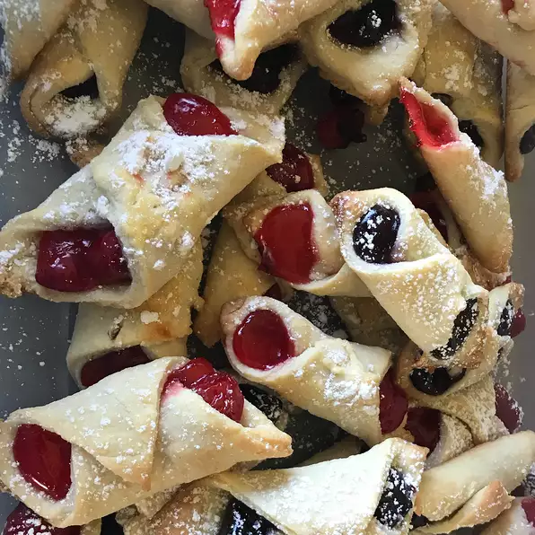

Kolachky

Recipe for kolachky
Ingredients
- 2 8 ounce packages of cream cheese
- 2 cups unsalted butter
- 4 cups all purpose flour
- 1 pound chopped walnuts
- 1 egg
- 1/2 cup honey
- 1 12 ounce can poppyseed filling
- 1/2 cup confectioners sugar
Directions
- In a large bowl, mix together cream cheese and butter until well blended. I like to use my hands, but you can also use a wooden spoon. Mix in the flour 1 cup at a time. As the dough becomes stiff, turn it out onto the counter and knead in flour until it is no longer sticky. Continue to knead the dough for 5 minutes.
- Preheat oven to 350 degrees F (175 degrees C). Crush the walnuts to a fine consistency in a food processor. Stir in the egg and honey. On a well floured surface, roll the dough out to 1/4 inch thickness. Cut the dough into 3x3 inch squares. Place a teaspoon of filling in the center of each square. Use walnut for some and poppyseed for the rest. Roll the squares up and seal the edges. These can also be formed into triangles. Place the cookies 2 inches apart onto ungreased cookie sheets. Brush with egg white.
- Bake for 15 to 17 minutes in the preheated oven, or until lightly browned. When cool, dust with confectioners' sugar.